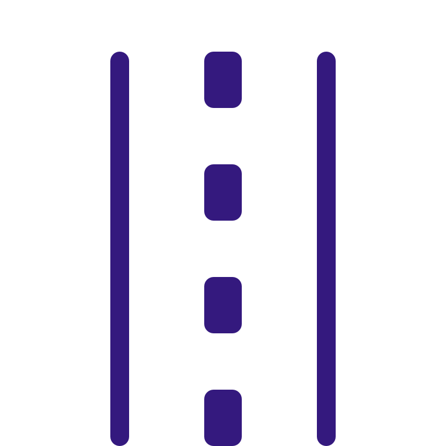

Transportation

Transportation is a pain point for many of our residents. Finding ways to create a more livable, walkable city that provides multimodal transit options while reducing environmental impact is achievable through embracing new smart city technologies. New technologies such as autonomous vehicles will transform cityscapes in the coming decades. Our team seeks to both experiment with pilots of these new technologies to benefit the public, further the ecosystem of innovation, and ensure we deploy tech in responsible ways.
Creating Public Value with Autonomous Vehicles
San José issued an Autonomous Vehicles RFI in 2017, which received an enthusiastic response from companies. We’re now working with a handful of companies to launch a set of pilots in the city.
LEARN MORETransportation Innovation Zone
The Transportation Innovation Zone offers technology innovators a platform to test their technology across a multi-mile network of streets, signals, and city infrastructure.
LEARN MOREReducing traffic fatalities with Vision Zero
San José joined a growing list of US cities implementing a Vision Zero initiative, which aims to reduce traffic fatalities to zero through education, enforcement and engineering in 2015. Since then, traffic fatalities have reduced from a peak of 60 in 2015 to 46 in 2017.
LEARN MORE